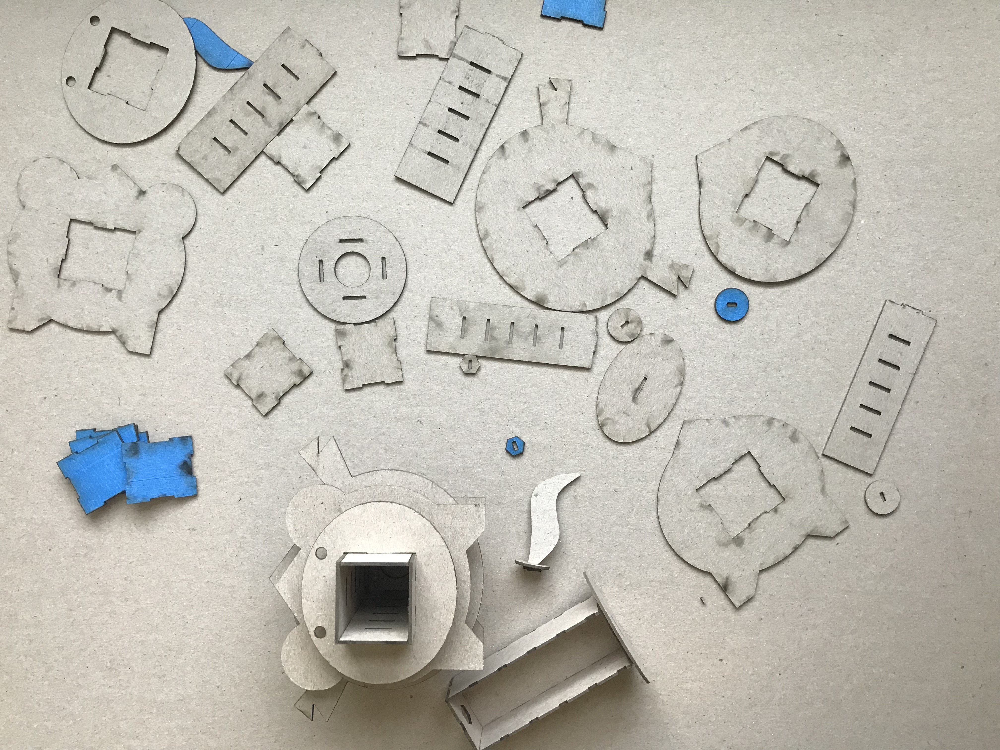
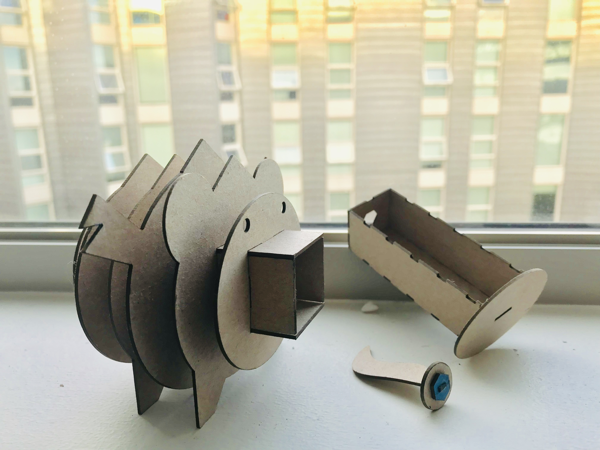
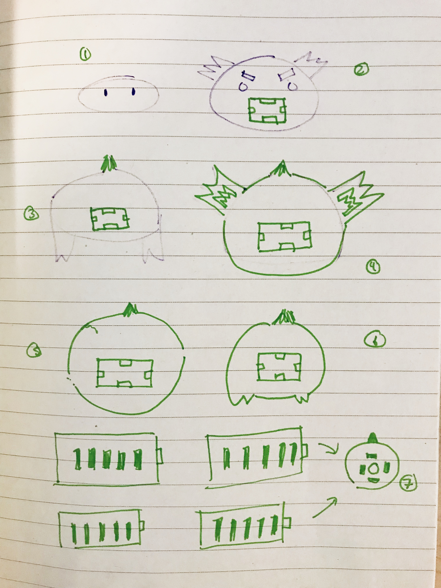
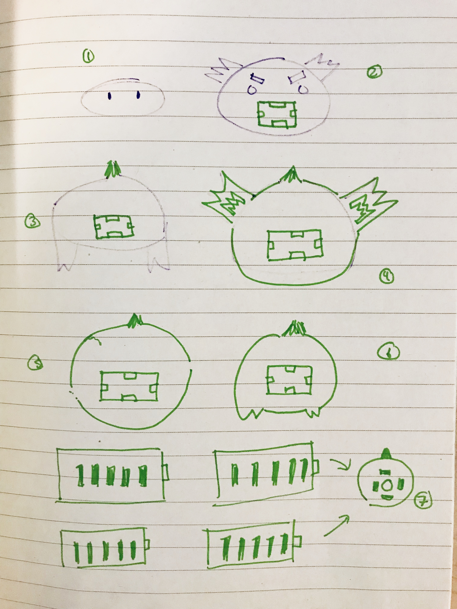
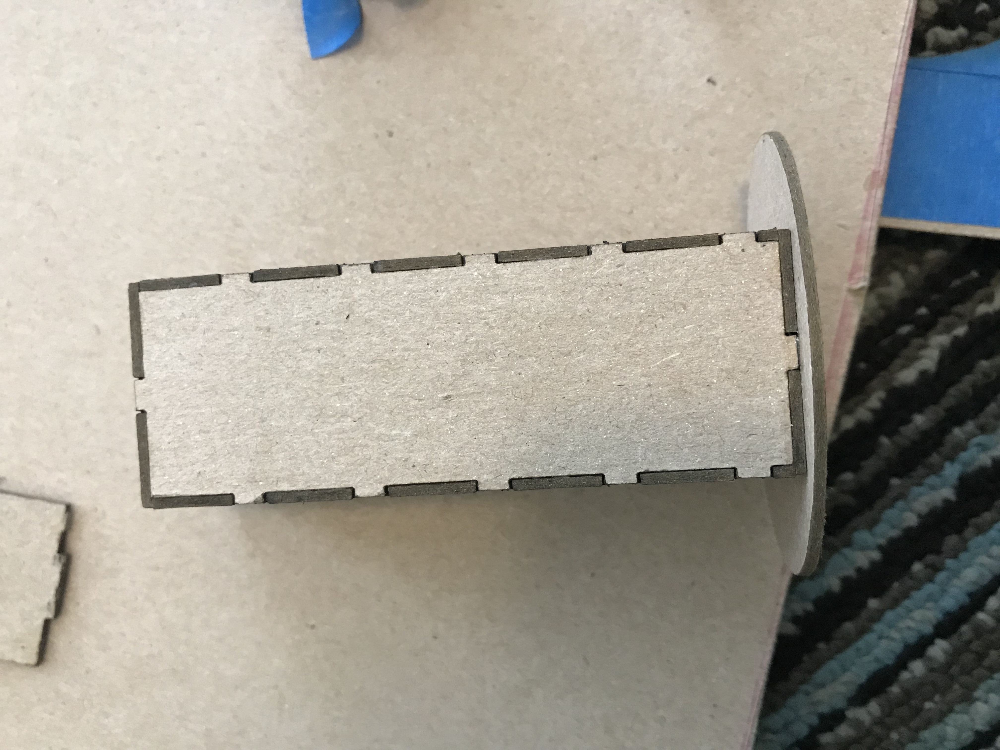

Bella's A8: Final Project
 
Documentation
- 1. Concept:
- 2. Source Files:
- 3. Bill of Materials:
- 4. Technical Documentation: Processes/Steps
Explained in A7: Project Proposal, I found on Pinterest an interesting design: pig box with a tail lock. I added my own twist to create an dragon box instead. Sketch images are from the last submission. This helped me layout my CAD drawing.

 


Machine Settings: Material Medium Wood, Thickness: 1.25mm Speed: 25% Power: 100%
(1) Chipboard 32x40 1PLY @Artist +Craftsman Supply = $2.57 (including tax). I cut the 32x40 into 4 pieces of 16x20.
Step 1: Concept, Inspiration, Requirements
Understanding the requirements: Design and digitally fabricate an object using at least four of the techniques learned from class. Here I listed CAD, Laser Cuting/Subtractively fabricated parts, moving parts, and interlocking parts. More details can be refered in Application of Techniques Learned from 598: Digital Fab.

Step 2: CAD Model + Test Moving Parts in Onshape Assembly
Using my calipers, I measured the piece of my chipboard (1.25mm).

I used OnShape to draw all my pieces, taking into consideration of the size of my chipboard. In this stage I had to redraw the model a couple of times because I did not originally have the thickness until later. After my final modifications with the pieces, I later assembled the pieces and realized I had to make several adjustments because some pieces did not fit together well. When the pieces finally fit together in assembly mode, I converted the file to DXG. In the illustrator file, I converted the line weights to .01 and RGB 255,0,0 (red).
Step 3: Laser Cuting + Construction
I used blue masking tape to cover my board. However I did not realize I needed to do the underneath side so I restarted.

Assembly Photos

Due to some areas where kerf was not correctly applied, I used wood glue to apply to some areas as needed when constructing.
Technical Implentation
Best Practices followed: Design Sketches, Laser Cutting Tolerances (kerf of the laser), Usage of Masking Tape, preventing a fire from laser cutting
Proposal vs Execution
high standard of design and finish - yes, I made sure it was clean from marks and the tape didn't peel off the surface.
drastically deviate from proposal - no, I created an animal box thus I have an animal box.
Application of Techniques Learned from 598: Digital Fab
- CAD from A2
- Laser Cuting from A1 & A2 vs
- Interlocking Parts from A5  vs
- Moving Parts from A4 vs


Peer-Teacher-Staff Attribution
Joshua for reviewing my proposal since I was out of town.